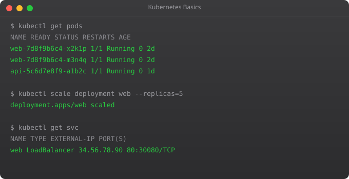

CI/CD pipelines are the engine of modern software delivery. Without automation, deployments are manual, error-prone, and infrequent. With a well-built pipeline, every code change is automatically tested, built, scanned for security issues, and deployed -- in minutes, not days. GitHub Actions has made building these pipelines accessible to any team using GitHub.
name: CI Pipeline
on:
push:
branches: [main, develop]
pull_request:
branches: [main]
jobs:
test:
runs-on: ubuntu-latest
steps:
- name: Checkout code
uses: actions/checkout@v4
- name: Set up Python
uses: actions/setup-python@v4
with:
python-version: "3.11"
- name: Install dependencies
run: |
pip install -r requirements.txt
pip install pytest
- name: Run tests
run: pytest tests/ -v --tb=shortjobs:
test:
runs-on: ubuntu-latest
steps:
- uses: actions/checkout@v4
- run: pytest tests/ -v
build:
needs: test # Only runs if test passes
runs-on: ubuntu-latest
steps:
- uses: actions/checkout@v4
- name: Build Docker image
run: |
docker build -t myapp:${{ github.sha }} .
docker push myapp:${{ github.sha }}
deploy:
needs: build # Only runs if build passes
runs-on: ubuntu-latest
if: github.ref == 'refs/heads/main' # Only on main branch
steps:
- name: Deploy to production
run: |
ssh user@server "docker pull myapp:${{ github.sha }} && docker compose up -d"# In GitHub repo: Settings > Secrets and variables > Actions
# Add: DOCKER_PASSWORD, AWS_ACCESS_KEY_ID, etc.
jobs:
deploy:
runs-on: ubuntu-latest
env:
APP_ENV: production # Plain variable
steps:
- name: Login to Docker Hub
uses: docker/login-action@v3
with:
username: ${{ vars.DOCKER_USERNAME }} # Variable (not secret)
password: ${{ secrets.DOCKER_PASSWORD }} # Secret (masked)
- name: Configure AWS
uses: aws-actions/configure-aws-credentials@v4
with:
aws-access-key-id: ${{ secrets.AWS_ACCESS_KEY_ID }}
aws-secret-access-key: ${{ secrets.AWS_SECRET_ACCESS_KEY }}
aws-region: us-east-1jobs:
test:
runs-on: ubuntu-latest
strategy:
matrix:
python-version: ["3.10", "3.11", "3.12"]
os: [ubuntu-latest, macos-latest]
steps:
- uses: actions/checkout@v4
- name: Set up Python ${{ matrix.python-version }}
uses: actions/setup-python@v4
with:
python-version: ${{ matrix.python-version }}
- run: pytest tests/ -vname: Production Deploy
on:
push:
tags: ["v*"] # Trigger only on version tags
jobs:
build-push-deploy:
runs-on: ubuntu-latest
steps:
- uses: actions/checkout@v4
- name: Build and push Docker image
uses: docker/build-push-action@v5
with:
push: true
tags: |
myrepo/myapp:${{ github.ref_name }}
myrepo/myapp:latest
cache-from: type=gha
cache-to: type=gha,mode=max
- name: Run smoke tests
run: |
docker run --rm myrepo/myapp:${{ github.ref_name }} pytest tests/smoke/
- name: Deploy to Kubernetes
run: |
kubectl set image deployment/myapp myapp=myrepo/myapp:${{ github.ref_name }}
kubectl rollout status deployment/myapp
- name: Rollback on failure
if: failure()
run: kubectl rollout undo deployment/myappCI (Continuous Integration) automatically builds and tests code on every commit. CD (Continuous Delivery) automatically deploys passing builds to staging or production. CI without CD is common -- CD without CI is dangerous. Together they create a fast, reliable delivery pipeline.
Use actions/cache: key: pip-${{ hashFiles("requirements.txt") }} with path: ~/.cache/pip. Or use setup-python with cache: "pip" which handles caching automatically. Caching dependencies can reduce pipeline time from 3 minutes to 30 seconds.
Use on: push: paths: - "src/**" - "tests/**". This only triggers the pipeline when files matching those patterns are changed. Useful for monorepos where you do not want a frontend change to trigger backend deployment.
Reusable workflows let you define a workflow once and call it from other workflows. Instead of copying your build steps to 10 repositories, define them in one central workflow and call it with: uses: myorg/workflows/.github/workflows/build.yml@main
Store secrets in GitHub Secrets (never in code). Use environment-scoped secrets for staging vs production. Consider OIDC (OpenID Connect) to get temporary cloud credentials instead of storing long-lived access keys. Rotate secrets regularly and audit access logs.
In Part 7, we cover Terraform -- the infrastructure as code tool that lets you provision and manage cloud resources with version-controlled configuration files.
← Back to Blog# .github/workflows/reusable-build.yml (in a central repo)
name: Reusable Build and Push
on:
workflow_call:
inputs:
image-name:
required: true
type: string
dockerfile-path:
required: false
type: string
default: "./Dockerfile"
secrets:
ecr-registry:
required: true
jobs:
build:
runs-on: ubuntu-latest
steps:
- uses: actions/checkout@v4
- name: Build and push
run: |
docker build -f ${{ inputs.dockerfile-path }} -t ${{ secrets.ecr-registry }}/${{ inputs.image-name }}:${{ github.sha }} .
docker push ${{ secrets.ecr-registry }}/${{ inputs.image-name }}:${{ github.sha }}name: Deploy
on: push
jobs:
build:
uses: myorg/shared-workflows/.github/workflows/reusable-build.yml@main
with:
image-name: my-api
secrets:
ecr-registry: ${{ secrets.ECR_REGISTRY }} security-scan:
runs-on: ubuntu-latest
steps:
- uses: actions/checkout@v4
# Scan Docker image for vulnerabilities
- name: Trivy image scan
uses: aquasecurity/trivy-action@master
with:
image-ref: myapp:${{ github.sha }}
exit-code: "1" # Fail pipeline on CRITICAL vulns
severity: "CRITICAL,HIGH"
# SAST: scan source code
- name: Bandit Python security scan
run: pip install bandit && bandit -r ./src/ -x ./tests/
# Secret scanning
- name: Gitleaks secret scan
uses: gitleaks/gitleaks-action@v2